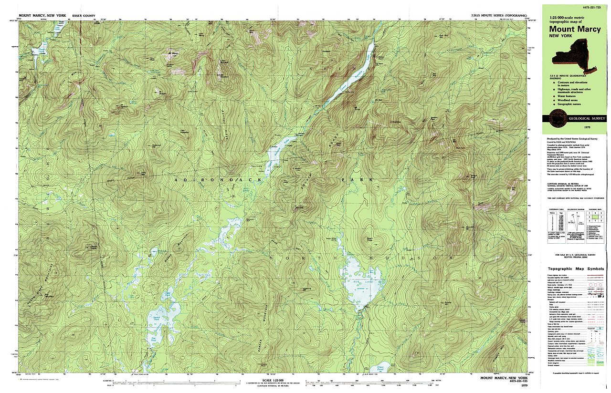
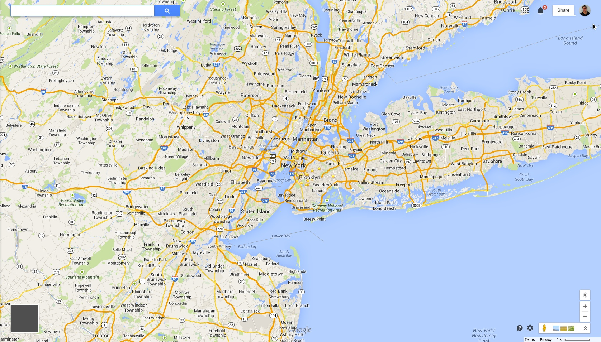
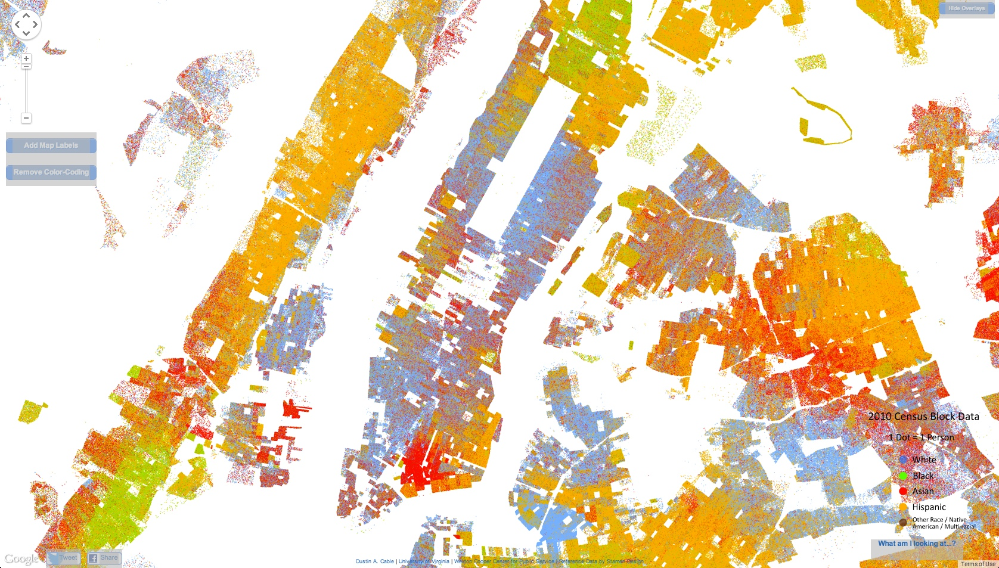
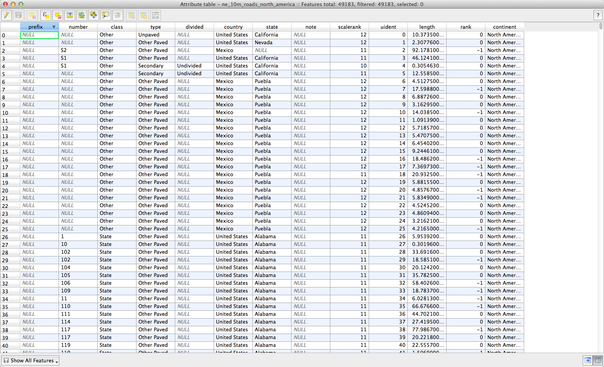
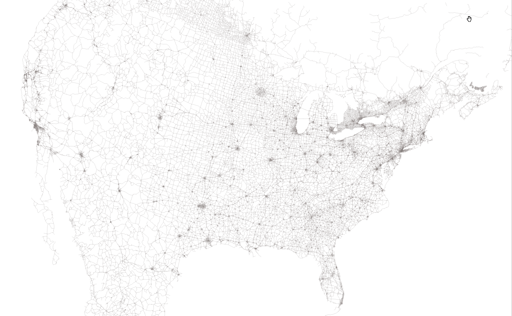
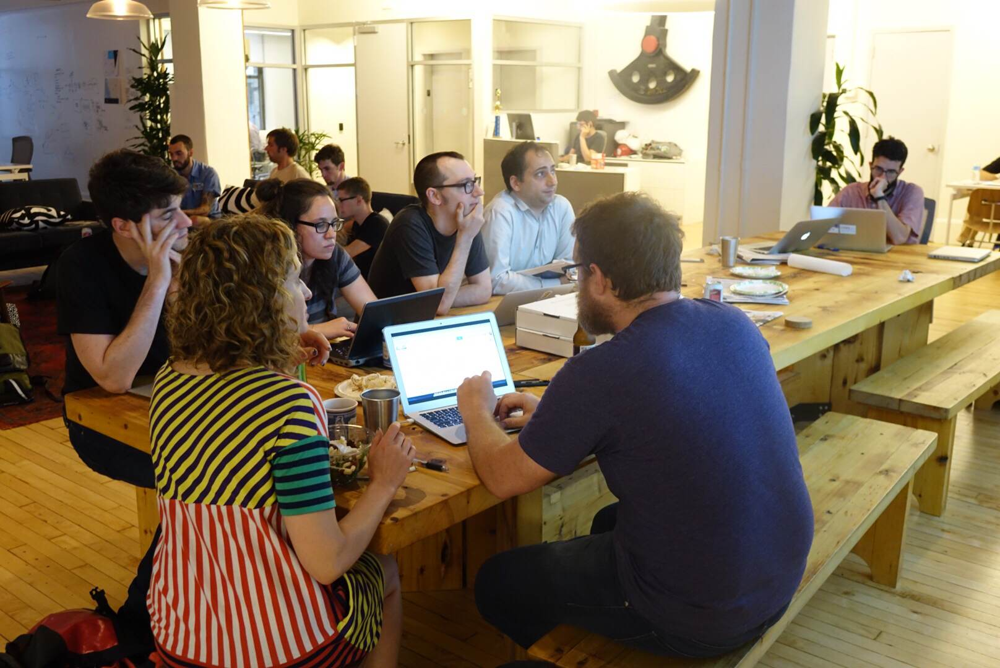

Creating maps on the web with CartoDB
by Chris Henrick @clhenrick
Why Maps?
What's the big friggin' deal?
Maps + Web = Really Cool
Maps + Web + Data = Really Really Cool
examples...
what's going on here?
the technology...
data + tiles + server + API

Data + location + geometry = geospatial data

Points

Lines

Polygons
Weird Formats?
Mostly Vector.
You know, like illustrator.
But with a backend
(data)
+ front end
(visual)
in one.

Why
CartoDB?
It takes care of all the nitty gritty server side stuff for you.
Lets you easily overlay spatial data onto a map.
Allows for the rapid prototyping of cartographic visualizations.
Makes it easy to publish and share your maps!
Allows for analysis with geospatial data.
And you don't have to install anything (!!!)
Disclaimer: there are other options too...
Leaflet, MapBox, TileMill, D3JS, etc...
But CartoDB packages some of these together for you
CartoDB's tile renderer:
MapnikBut you don't really need to know all that...
But if you'd like to, you should come to ...
MapTime!
Let's make a map!